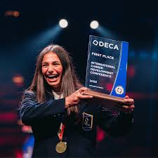

As of 2025, I’m a 10th grade student at CCA who is currently extremely occupied with all my AP/Honors classes going on. Something to know about me is that I have a lot of drive and passion towards trying new things and excelling in different subjects like business and science. Specifically, I love going out and exploring various competitions like Science Olympiad, Deca, and Future Business Leaders of America. Last year at CCA, I placed 6th place at DECA SoCal in Apparel and Accessories Marketing and then 6th place again at DECA California State conference for Human Resource Management, only 1 place away from one of the upperclassmen at CCA. This meant a lot to me as a freshman last year because I even qualified for the International Career Development Conference for DECA that year, and it was honestly such an amazing achievement. Unfortunately, I didn’t go last year but I’m hoping to qualify again this year!
In my free time, I love to sing various pop songs and follow/analyze singers and their pop culture fandoms. Some of my favorite singers are Lady Gaga and Marina, since I admire their vocal range and singing styles. Additionally, I like drawing people, figures, cartoons, etc. Hand in hand with pop and art, I have an affinity for fashion and designing clothes. While I’m not interested in making physical arts/wearable apparel, the designing aspect is very thrilling and intuitive to me. I also appreciate extreme fashion and various aesthetics, like coquette, kidcore, visual kei , lolita, and more.
 Moving forward, I would like to strengthen my knowledge of the French language and become a more organized person. Specifically, I plan to make a planner and schedule for the rest of the year so I can tackle my workload more efficiently. I would also like to become less doubtful and more optimistic about the future, rather than using a depressive lens for viewing situations. I’d also like to get a driver’s permit in the near future and explore more internship opportunities as I move up various grades in high school. I am planning on pursuing a business focused career and I hope to become more experienced in this topic through attending DECA and Future Business Leaders of America again this year, along with an Advanced Business Management class I will be taking in semester 2. I hope that one day I can look back on my goals and know that they have been fulfilled, and I’m excited to see where I go!